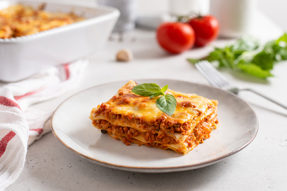

Узнайте, как приготовить классическую лазанью с мясным фаршем и соусом бешамель в духовке. Подробный пошаговый рецепт, советы по выбору сыра, секреты слоеной структуры и идеи начинок. Идеальное блюдо для семейного ужина! Лазанья — это не просто блюдо, это кулинарное путешествие в Италию прямо у вас дома. И хотя процесс приготовления может показаться сложным, следуя пошаговому рецепту и нашим советам, вы с легкостью создадите свою идеальную лазанью.
Это не просто паста, это целая история в одном блюде! Наша лазанья — это многослойная симфония вкуса, которая согреет душу и подарит настоящее гастрономическое наслаждение. Мы бережно выкладываем слои широких макаронных листов, пропитанных ароматным соусом бешамель с нотками мускатного ореха. Их сменяет сочная мясная начинка, томленая с итальянскими травами и спелыми томатами. В сердцевине каждого слоя тает нежная моцарелла и выдержанный пармезан, создавая ту самую божественную тягучую сырную корочку. Запеченная до золотисто-румяной корочки, наша лазанья подается горячей, источая аппетитный аромат чеснока, базилика и расплавленного сыра. Это — вкус Италии и уюта в каждой вилке.

Приятного аппетита! Не бойтесь экспериментировать и добавлять свои собственные нотки в этот классический рецепт. Главное — готовить с любовью и хорошим настроением!